본 보고서는 아마존 상품판매 데이터를 분석하여 마케팅 인사이트를 도출하는 것을 목표로 합니다. 분석 대상은 "./data/Amazon_Sale_Report.csv" 파일이며, 데이터 탐색, 판매 트렌드 분석, 변수 관계 분석, 고객 세그먼트 분석 등 다양한 분석 기법을 적용하였습니다.
분석 결과, 총 121,180개의 주문 데이터를 바탕으로 판매 트렌드, 카테고리별 성과, 고객 세그먼테이션, 프로모션 효과 등에 대한 인사이트를 도출하였습니다. 이를 통해 매출 증대 및 고객 경험 향상을 위한 실행 가능한 전략을 제안합니다.
아마존 판매 데이터의 기본 구조를 파악한 결과, 원본 데이터는 (128975, 24) 크기로 구성되어 있으며,
다음과 같은 주요 컬럼을 포함하고 있습니다:
- 주문 정보: Order ID, Date, Status
- 제품 정보: Style, SKU, Category, Size, ASIN
- 배송 정보: Fulfilment, ship-service-level, ship-city, ship-state, ship-postal-code, ship-country
- 가격 정보: Qty, currency, Amount
- 추가 정보: Sales Channel, promotion-ids, B2B, fulfilled-by
데이터 품질 향상을 위해 다음과 같은 전처리 작업을 수행하였습니다:
- 불필요한 컬럼(index, Unnamed: 22) 제거
- 날짜 데이터를 datetime 형식으로 변환
- 결측치 처리:
- Courier Status: 'Not Available'로 대체
- currency, Amount: 결측치가 있는 행 제거
- 배송 정보: 'Unknown'으로 대체
- promotion-ids: 'No Promotion'으로 대체
- fulfilled-by: 'Not Specified'로 대체
- Amount를 float 타입으로 변환
전처리 후 최종 데이터셋 크기는 (121180, 22) 입니다.
인사이트: 원본 데이터에서 약 7,795개의 행이 제거되었으며(약 6%), 이는 주로 금액 정보가 누락된 데이터였습니다. 이러한 데이터 품질 문제는 판매 프로세스 개선을 통해 해결할 수 있을 것입니다.
3.3.1. 월별 판매 트렌드
월별 판매 트렌드를 분석한 결과, 월 평균 30,295건의 주문과 약 19,648,170의 매출이 발생했습니다.
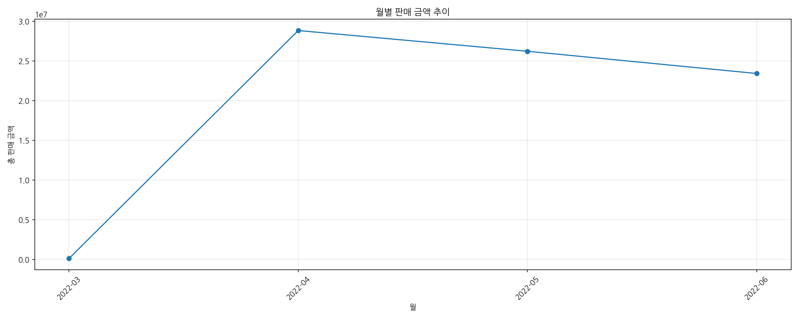
월별 판매 트렌드 그래프
3.3.2. 카테고리별 매출
카테고리별 매출 분석 결과, 'Set' 카테고리가 약 39204124.03의 매출로 가장 높은 실적을 보였습니다. 총 9개의 카테고리가 있습니다.
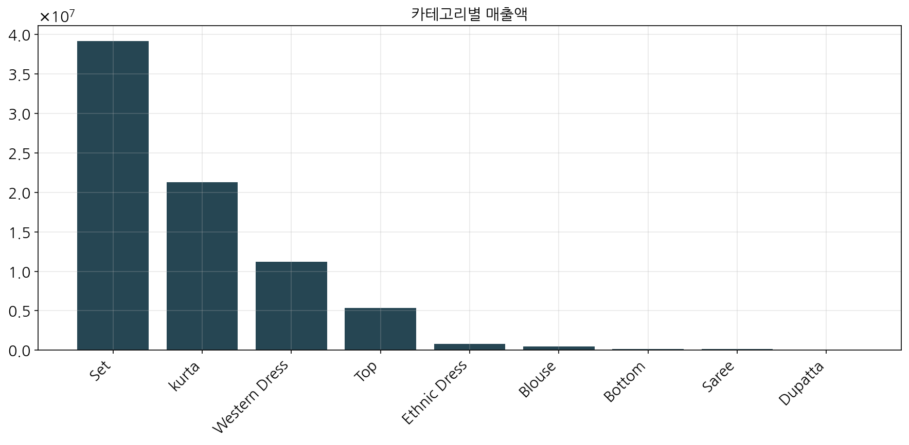
카테고리별 매출액 그래프
3.3.3. 판매 채널 분석
판매 채널 분석 결과, 모든 판매는 Amazon.in 채널을 통해 이루어졌으며, 총 매출액은 약 78,592,678입니다.
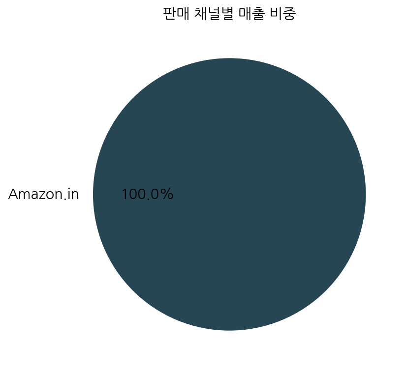
판매 채널별 매출 비중 그래프
3.3.4. 배송 방식 분석
배송 방식 분석 결과, Amazon 배송이 83,639건으로 전체 주문의 약 69%를 차지하며, 매출액은 약 54,322,151입니다. Merchant 배송은 37,541건으로 나머지 31%를 차지하며, 매출액은 약 24,270,527입니다.
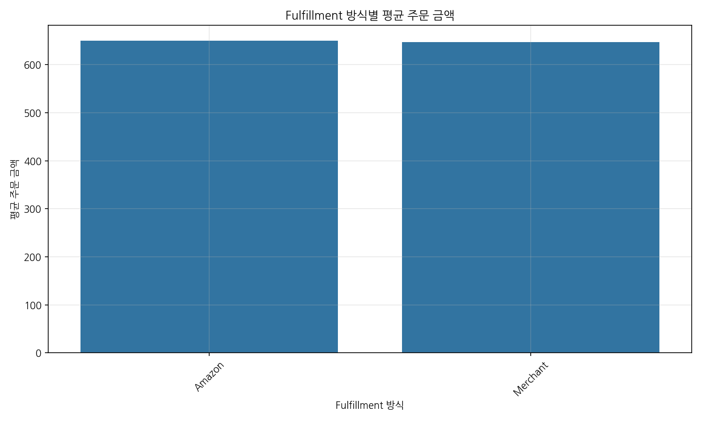
배송 방식별 주문 건수 그래프
3.3.5. 상위 제품 분석
상위 제품 분석 결과, JNE3797 스타일이 3,995건의 주문과 약 2,933,482의 매출로 가장 인기 있는 제품으로 나타났습니다.
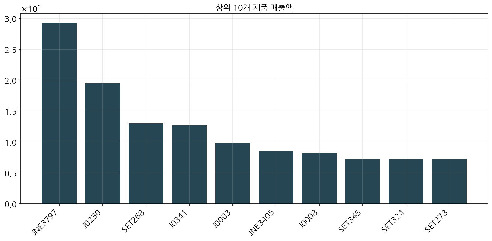
상위 10개 제품 매출액 그래프
3.3.6. 지역별 판매 분석
지역별 판매 분석을 통해 상위 주(state)별 매출액을 확인하였습니다.
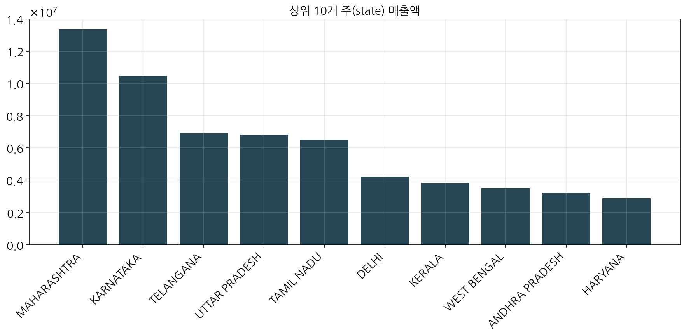
상위 10개 주(state) 매출액 그래프
인사이트: 'Set' 카테고리가 전체 매출의 상당 부분을 차지하므로, 이 카테고리의 제품 라인업을 확장하고 마케팅 노력을 집중할 필요가 있습니다. 또한, Amazon 배송이 선호되는 것으로 보아 물류 관련 파트너십을 강화하면 고객 만족도를 더욱 높일 수 있을 것입니다.
3.4.1. RFM 고객 세그먼테이션
RFM(Recency, Frequency, Monetary) 분석을 통해 고객을 다음과 같이 세그먼트화하였습니다:
Lost VIP 2950
Recent Customers 2478
Lost Customers 1469
VIP 1444
Loyal Customers 614
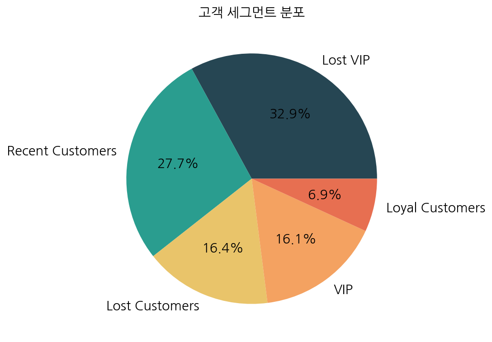
고객 세그먼트 분포 그래프
3.4.2. 변수 간 상관관계
주요 변수 간의 상관관계를 분석하여 판매 패턴을 파악하였습니다.
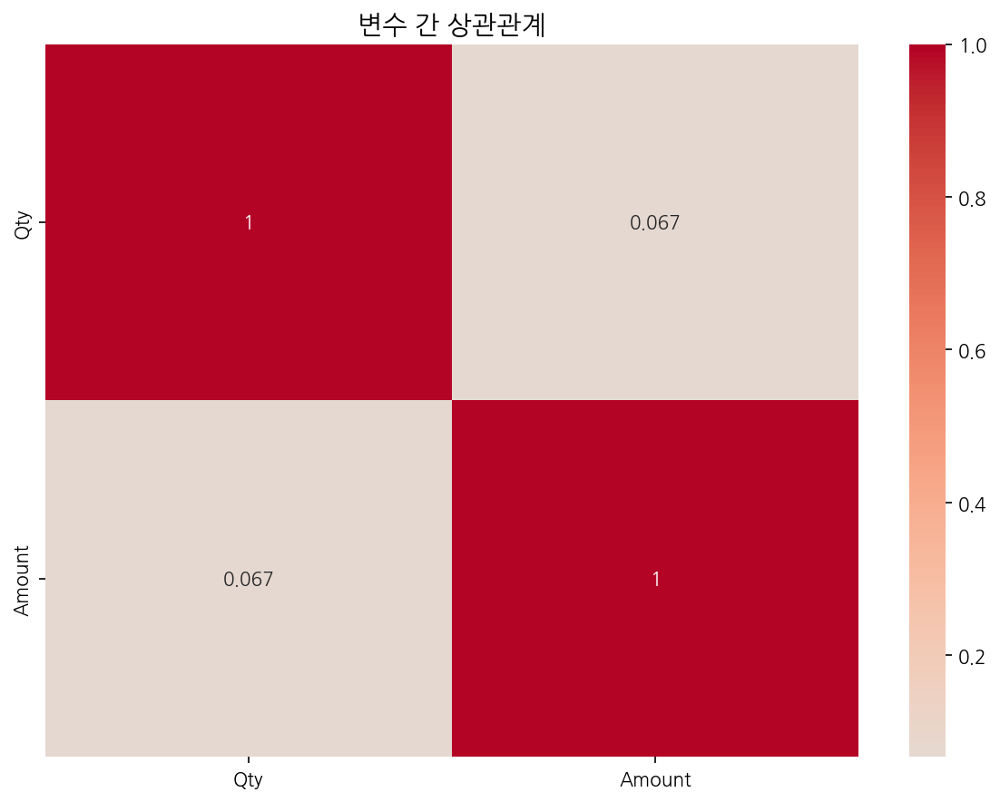
변수 간 상관관계 히트맵
3.4.3. 주문 금액 분포
주문 금액의 분포를 분석하여 가격 전략에 활용할 수 있는 인사이트를 도출하였습니다.

주문 금액 분포 그래프
3.4.4. 요일별 주문 패턴
요일별 주문 패턴을 분석하여 고객의 구매 행동을 이해하였습니다.
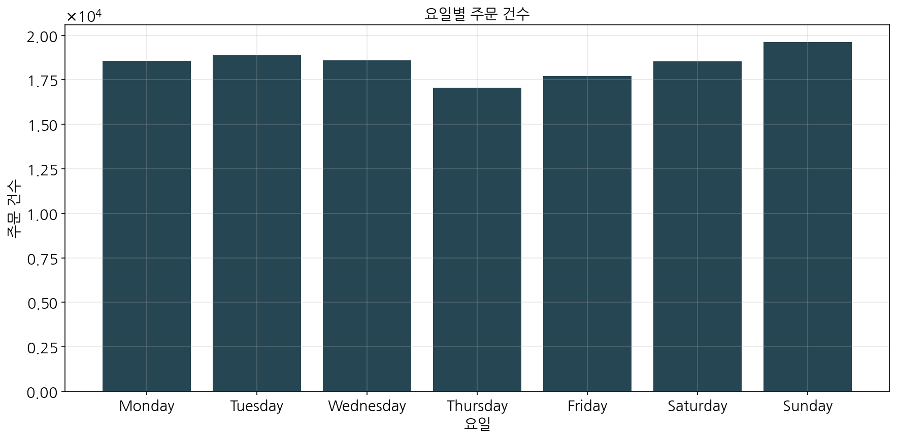
요일별 주문 건수 그래프
3.4.5. 카테고리별 평균 주문 금액
카테고리별 평균 주문 금액을 분석하여 상품 가격 전략에 활용할 수 있는 정보를 수집하였습니다.
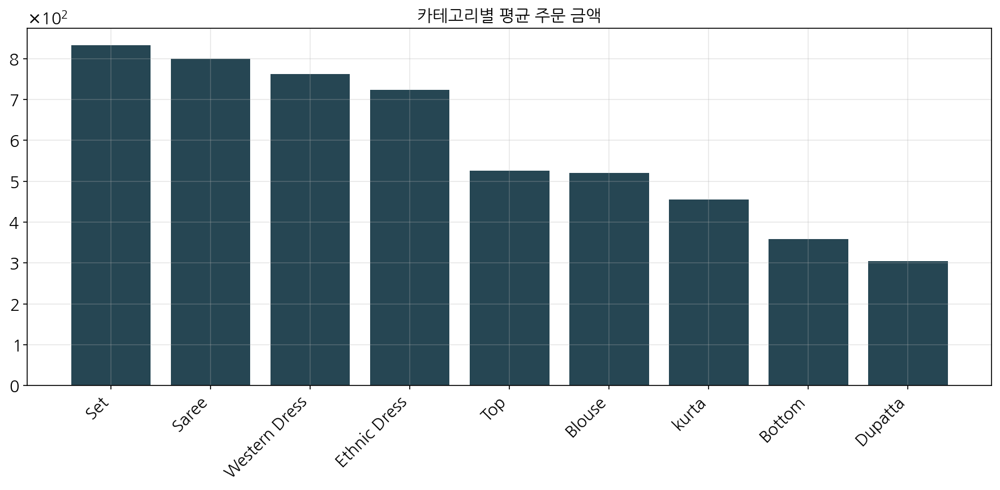
카테고리별 평균 주문 금액 그래프
3.4.6. 프로모션 효과 분석
프로모션이 판매에 미치는 영향을 분석하였습니다.

프로모션 효과 분석 그래프
3.4.7. 배송 서비스 레벨 분석
배송 서비스 레벨별 분포를 분석하여 고객의 선호도를 파악하였습니다.
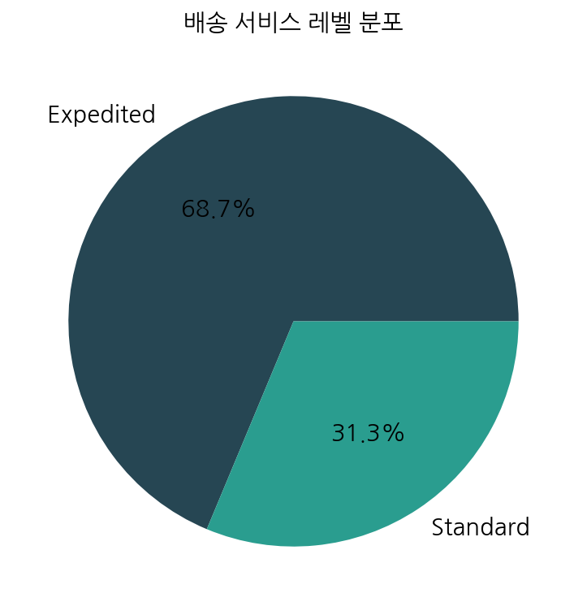
배송 서비스 레벨 분포 그래프
인사이트: 'Lost VIP' 세그먼트가 가장 큰 비중을 차지하는 것은 과거 고가치 고객들의 이탈이 심각하다는 것을 의미합니다. 이들을 다시 확보하기 위한 타겟 캠페인이 필요합니다. 또한, 프로모션의 효과가 뚜렷하게 나타나므로, 적절한 프로모션 전략을 통해 매출 증대를 도모할 수 있습니다.
3.5.1. 일별 판매 트렌드
일별 판매 트렌드를 분석한 결과, 평균 일일 매출은 약 863655.81이며,
최대 일일 매출은 1209364.17,
최소 일일 매출은 101683.85입니다.
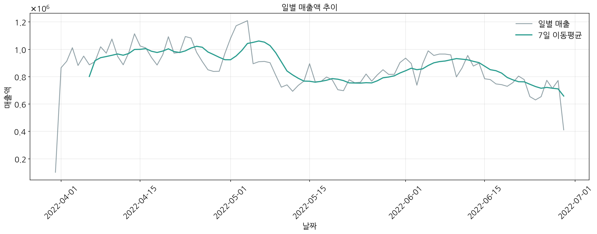
일별 매출액 추이 그래프
3.5.2. 월별 성장률
월별 성장률을 분석한 결과, 평균 월간 성장률은 9413.80%이며,
최대 성장률은 28261.15%,
최소 성장률은 -10.68%입니다.
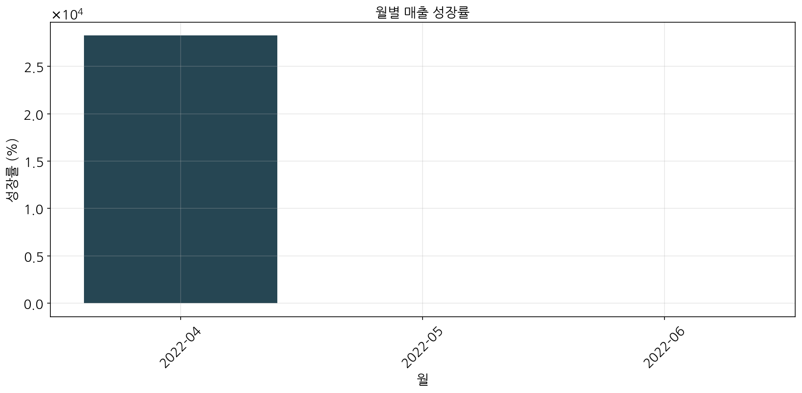
월별 매출 성장률 그래프
3.5.3. 월별 평균 매출
월별 평균 매출을 분석하여 계절성 패턴을 파악하였습니다.
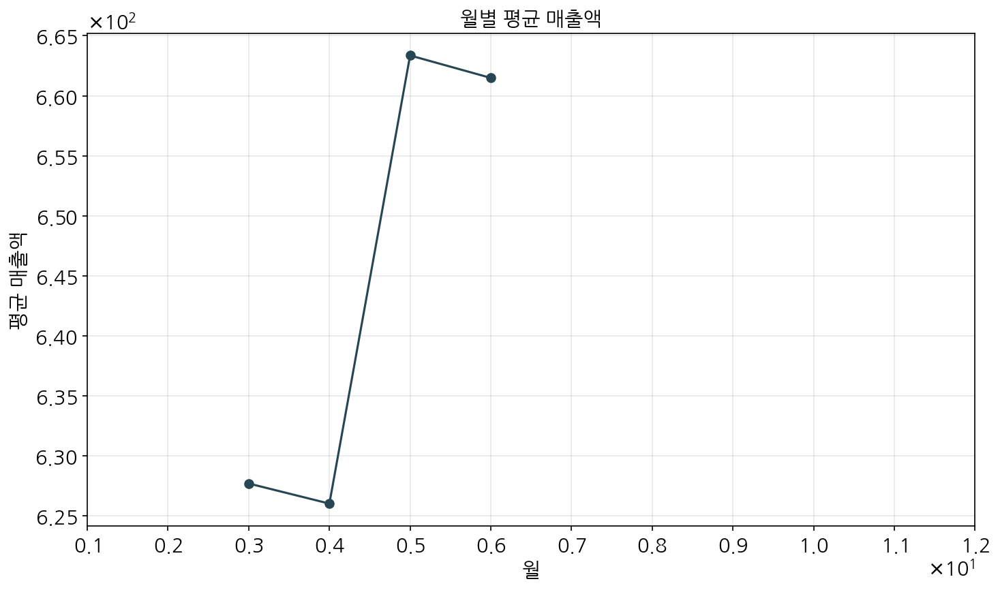
월별 평균 매출액 그래프
3.5.4. 분기별 매출
분기별 매출을 분석하여 중장기 판매 패턴을 파악하였습니다.

분기별 총 매출액 그래프
인사이트: 월별 성장률이 매우 높게 나타나는 것은 사업이 빠르게 성장하고 있다는 신호입니다. 그러나 성장률의 변동성이 크기 때문에, 안정적인 성장을 위한 전략이 필요합니다. 또한, 월별 평균 매출에 계절성이 나타나므로, 이를 고려한 재고 및 마케팅 계획을 수립해야 합니다.